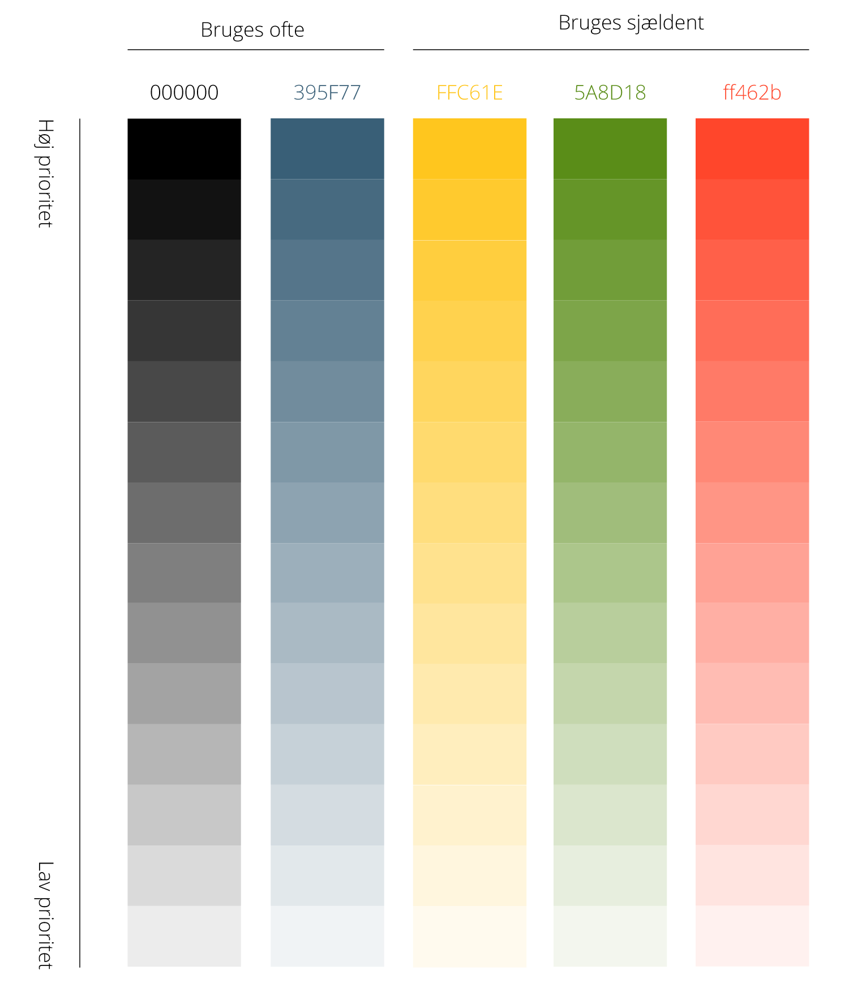

Designstil og tone
Stil
SKATs primære funktion er at oplyse og hjælpe borgeren, ikke underholdning. Derfor skal alle elementer, der ikke har en funktion der understøtter dette, udelades.
SKAT bruger flat design, dvs.:
- Ingen skygger, 3d-effekter eller gradient farveskala for at skabe 3d effekter.
- Flader er ensfarvede (se afsnit om farver) uden gradients.
- Ingen smileys, emojis, clipart.
- Runde hjørner (3px/0.2em) benyttes til at signalere vigtige klikbare elementer såsom navigationselementer
Hovedregler
- Start altid med hvid baggrund og sort tekst
- Vigtigt indhold: Mørkt
- Ikke så vigtigt indhold: Lyst
Farveskema

I farveskemaet er farverne rangeret efter prioritet og hvor ofte de skal bruges
Oftest brugt
- Grå - brug gråtoner på tekst og ikke-klikbare elementer: Eksempelvis farveskift på side for at markere nyt indhold.
- Blå "#395f77" er SKATs primærfarve til links, menu og klikbare elementer - med hvid tekst, se forsiden af skat.dk.
Mindre brugt
- Gul "#ffc61e" skal kun bruges til at markere login knapper.
- Grøn "#5A8D18" skal kun bruges på OK/godkend/videre-knapper.
- Rød "#FF462B" skal kun bruges på fejl-elementer og advarsler, hvor videre færd ikke er mulig.
Husk
at tjekke om kontrasten mellem tekst og baggrund er tilstrækkelig stor - AA-niveauet skal overholdes. Du kan tjekke kontrasten her: http://leaverou.github.io/contrast-ratio/#white-on-#000
Tekst
SKAT benytter Google Open Sans Font
Hvis ikke Open Sans er mulig så benyt en lignende sans-serif font
Tag udgangspunkt i
- Hvid baggrund og sort tekst
- Der bruges kun farvet baggrund ved links, menu, og knapper.
Tekst skal være kort, gerne med tydelig call-to-action.
Folk læser ikke, de skimmer - brug derfor:
- Sigende overskrifter
- Giv folk et overblik ved at pakke tekst væk i en fold-ind/fold-ud.
- Brug ikke understregning - det er reserveret til links (se afsnit om links og knapper).
- Tekst-længden skal være max omkring 100 tegn.